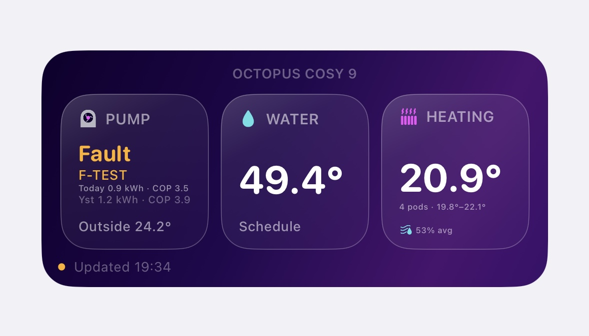
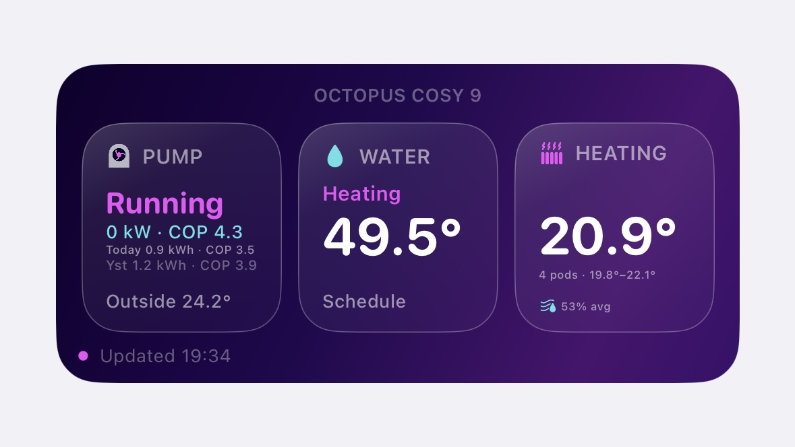
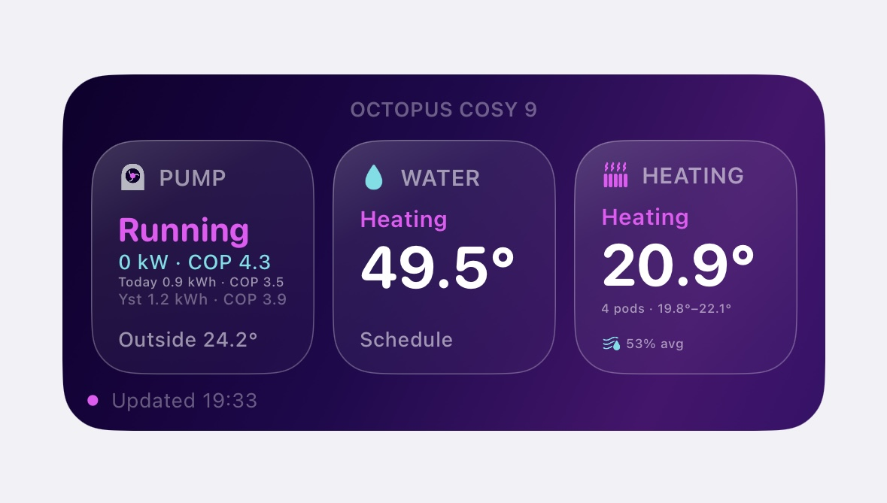

What it shows
Pump status
Quickly see whether the heat pump is standby, running, heating water, offline or reporting a fault.
Hot water
See current hot water cylinder temperature and water mode where data is available.
Cosy Pods
Shows pod temperatures, average room temperature, temperature range and average humidity.
Performance
Displays power, heat output, COP and energy use where the Octopus API returns those values.
Energy use
Shows today’s and yesterday’s energy use, including COP values where available.
Fault alerts
Faults are highlighted in amber so they stand out from normal running states.
Widget screenshots

Fault detection
Highlights the fault state clearly and displays the fault code where available.

Water heating
Shows when hot water is actively heating, alongside live heat pump performance data.

Heating active
Shows when heating is active, with room temperatures, temperature range and humidity data.
Install guide
Download Scriptable from the App Store on your iPhone.
Copy your API key from your Octopus account. Keep it private.
Paste the Cosy Watch script into a new Scriptable script.
Replace the placeholder API key with your own key on your device.
Add a medium Scriptable widget to your Home Screen and choose the saved script.